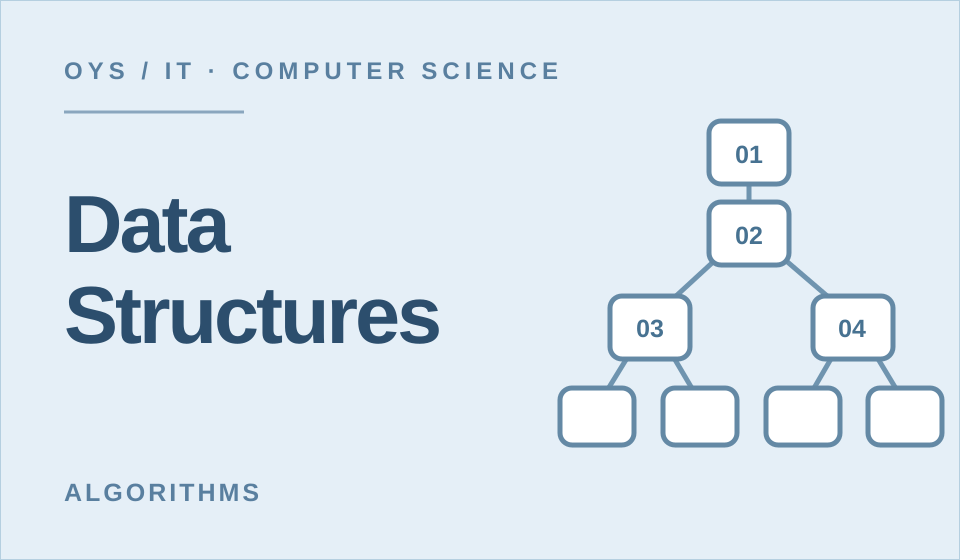
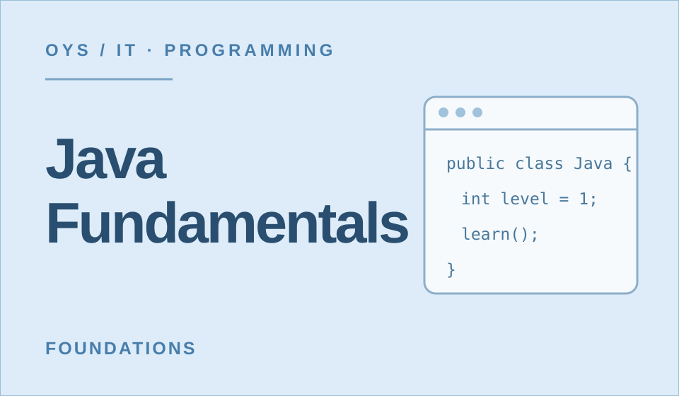
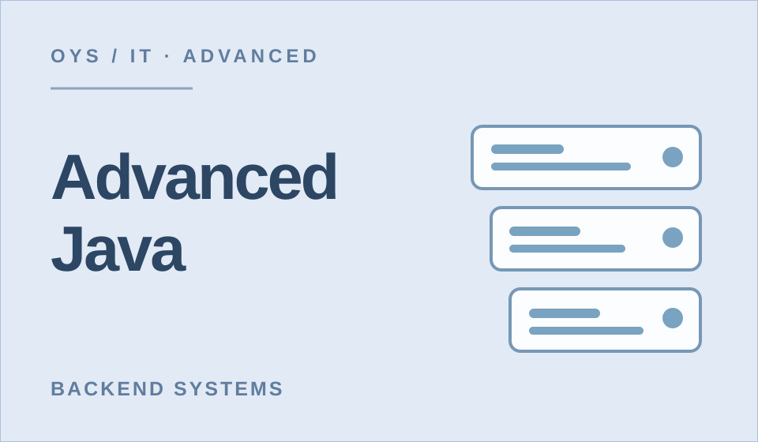
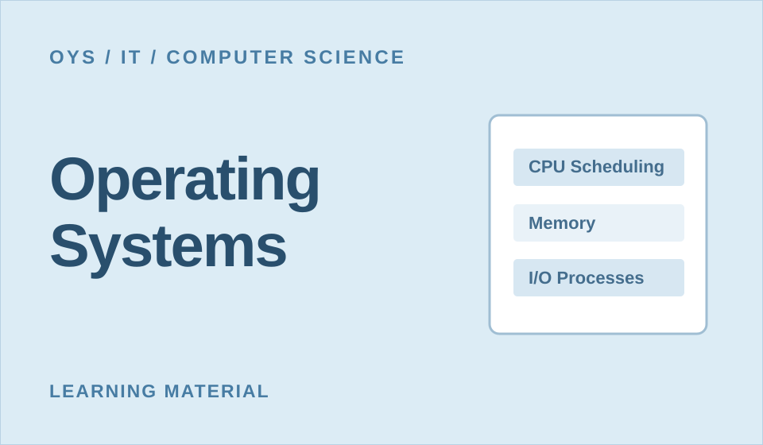
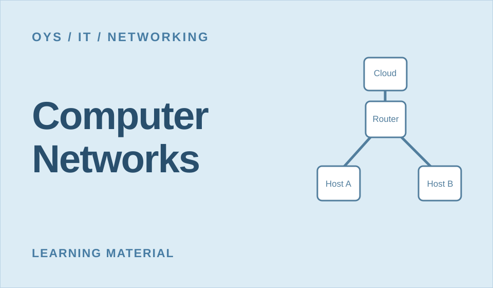
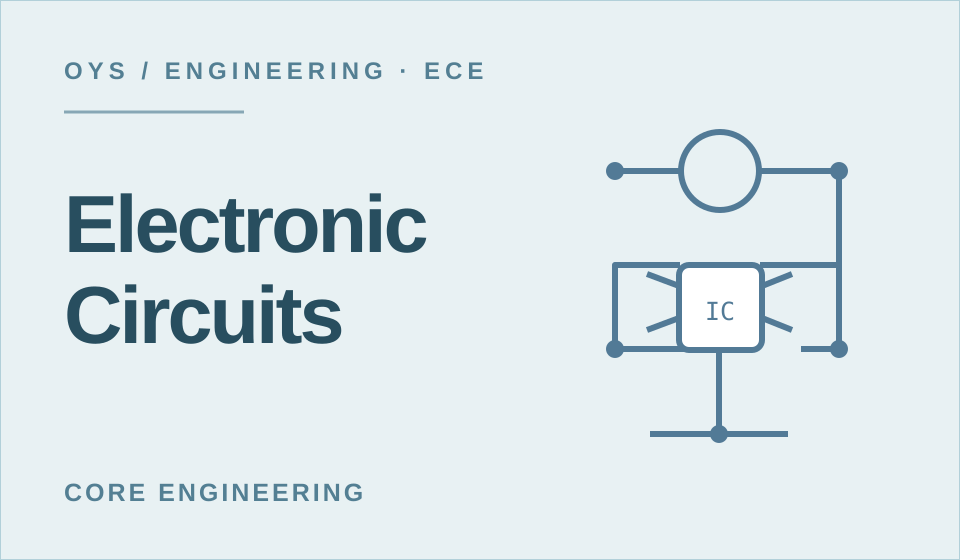
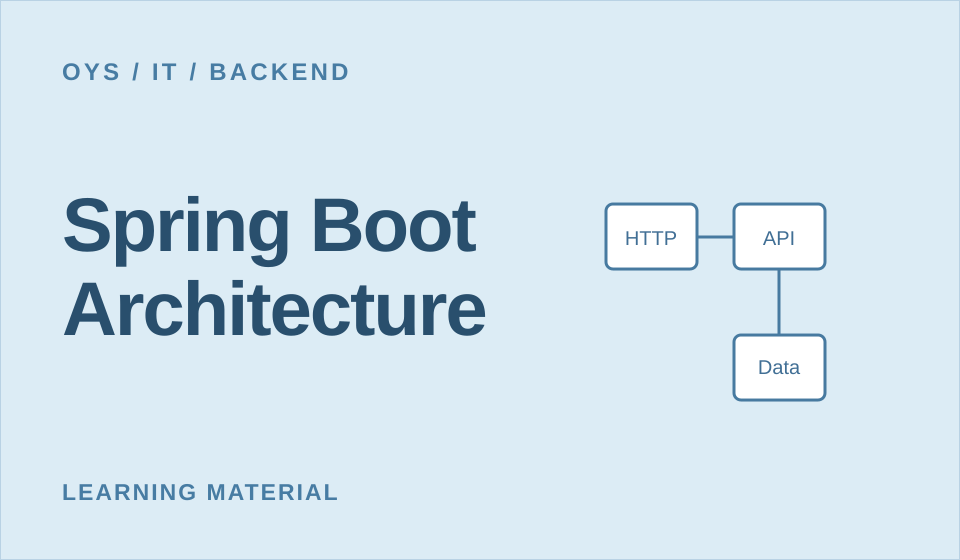
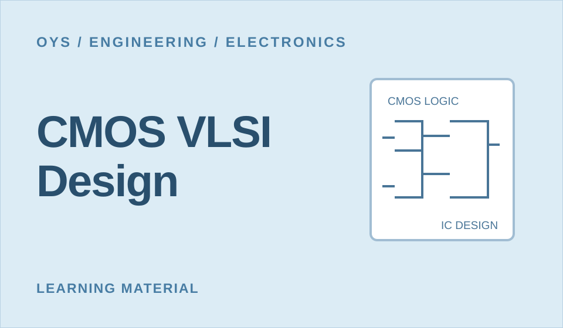

Graphs and Trees
Traversals and core graph algorithms.
Study resource
Browse by sector, category and subject to find the right material.
Start with your learning or career pathway
Filter by category, subcategory, subject or access type

Traversals and core graph algorithms.

Core syntax, data types, methods and object-oriented programming.

Concurrency, JVM performance and backend architectures.

Processes, threads and memory management.
Encapsulation, inheritance, polymorphism and interfaces.

TCP/IP, routing and network fundamentals.

Circuit analysis, components and measurement basics.
Collections framework, lists, maps and sets.
Gates, logic families and digital design basics.
Functional-style processing and stream pipelines.

Controllers, dependency injection and data access.

MOS devices, logic and VLSI fundamentals.
Local demonstration: search, category filters, and paging use sample data. Production REST catalogue pagination and college authorization are implemented separately in Spring Boot and still require live OYS identity integration.